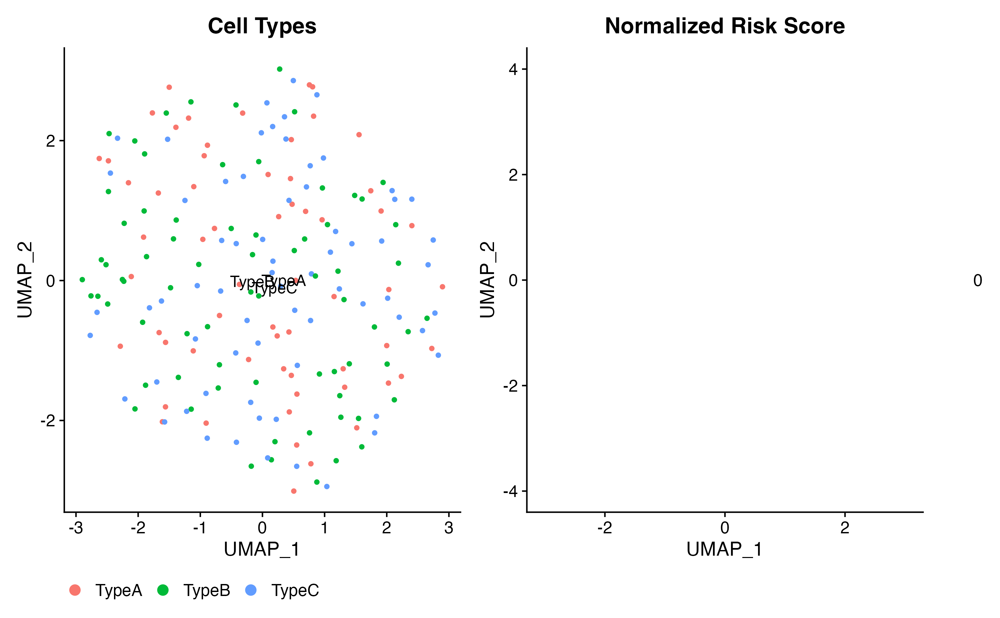

Quick Start Guide
Zaoqu Liu
Department of Interventional Radiology, The First Affiliated Hospital of Zhengzhou Universityliuzaoqu@163.com
Aimin Xie
Original Authoraiminyy1993@gmail.com
2026-01-23
Source:vignettes/quick-start.Rmd
quick-start.RmdIntroduction
scPAS (Single-Cell Phenotype-Associated Subpopulation identifier) is a computational tool designed to identify cell subpopulations associated with phenotypes by integrating single-cell RNA-seq data with bulk transcriptomics data.
Key Features
- Multi-modal Integration: Combines single-cell and bulk RNA-seq data
- Multiple Phenotype Types: Supports continuous, binary, and survival phenotypes
- Network Regularization: Leverages gene-gene similarity networks
- Statistical Rigor: Permutation-based significance testing with FDR correction
Package Installation
# Install from GitHub
if (!require("devtools")) install.packages("devtools")
devtools::install_github("Zaoqu-Liu/scPAS")
# Install dependencies if needed
if (!require("BiocManager")) install.packages("BiocManager")
BiocManager::install("preprocessCore")Quick Example
Simulate Example Data
For this quick start, we’ll create simulated data to demonstrate the workflow:
set.seed(42)
# Simulate bulk RNA-seq data (500 genes x 50 samples)
n_genes <- 500
n_bulk_samples <- 50
n_cells <- 200
bulk_data <- matrix(
rpois(n_genes * n_bulk_samples, lambda = 100),
nrow = n_genes,
ncol = n_bulk_samples
)
rownames(bulk_data) <- paste0("Gene", 1:n_genes)
colnames(bulk_data) <- paste0("Sample", 1:n_bulk_samples)
# Add log transformation
bulk_data <- log2(bulk_data + 1)
# Simulate single-cell data (same genes x 200 cells)
sc_counts <- matrix(
rpois(n_genes * n_cells, lambda = 5),
nrow = n_genes,
ncol = n_cells
)
rownames(sc_counts) <- paste0("Gene", 1:n_genes)
colnames(sc_counts) <- paste0("Cell", 1:n_cells)
# Create Seurat object
sc_obj <- CreateSeuratObject(
counts = sc_counts,
project = "QuickStart"
)
# Add cell type labels
sc_obj$celltype <- sample(
c("TypeA", "TypeB", "TypeC"),
n_cells,
replace = TRUE
)
# Simulate phenotype (continuous)
phenotype <- rnorm(n_bulk_samples, mean = 50, sd = 10)
names(phenotype) <- colnames(bulk_data)Preprocess Single-Cell Data
Use the built-in run_Seurat() function for standard
preprocessing:
# Standard Seurat preprocessing
sc_obj <- run_Seurat(sc_obj, verbose = FALSE)
# Check the result
sc_obj
#> An object of class Seurat
#> 500 features across 200 samples within 1 assay
#> Active assay: RNA (500 features, 500 variable features)
#> 3 dimensional reductions calculated: pca, tsne, umapRun scPAS Analysis
# Run scPAS with Gaussian family (continuous phenotype)
result <- scPAS(
bulk_dataset = bulk_data,
sc_dataset = sc_obj,
phenotype = phenotype,
family = "gaussian",
nfeature = 200, # Use top 200 variable genes
permutation_times = 100, # Reduced for demo (use 1000+ in practice)
do_imputation = FALSE, # Skip imputation for speed
n_cores = 1 # Single core
)Examine Results
# View added metadata columns
head(result@meta.data[, c("scPAS_RS", "scPAS_NRS", "scPAS_Pvalue", "scPAS_FDR", "scPAS")])
#> scPAS_RS scPAS_NRS scPAS_Pvalue scPAS_FDR scPAS
#> Cell1 0 0 1 1 0
#> Cell2 0 0 1 1 0
#> Cell3 0 0 1 1 0
#> Cell4 0 0 1 1 0
#> Cell5 0 0 1 1 0
#> Cell6 0 0 1 1 0
# Summary of cell classifications
table(result$scPAS)
#>
#> 0
#> 200
# Check significance
cat("Cells with FDR < 0.05:", sum(result$scPAS_FDR < 0.05, na.rm = TRUE), "\n")
#> Cells with FDR < 0.05: 0
cat("scPAS+ cells:", sum(result$scPAS == "scPAS+", na.rm = TRUE), "\n")
#> scPAS+ cells: 0
cat("scPAS- cells:", sum(result$scPAS == "scPAS-", na.rm = TRUE), "\n")
#> scPAS- cells: 0Basic Visualization
library(ggplot2)
# UMAP plot colored by cell type
p1 <- DimPlot(result, group.by = "celltype", label = TRUE) +
ggtitle("Cell Types") +
theme(legend.position = "bottom")
# UMAP plot colored by risk score
p2 <- FeaturePlot(result, features = "scPAS_NRS") +
scale_color_gradient2(low = "blue", mid = "white", high = "red", midpoint = 0) +
ggtitle("Normalized Risk Score")
# Combine plots
p1 | p2
Output Structure
The scPAS function adds the following columns to the Seurat object’s metadata:
| Column | Description |
|---|---|
scPAS_RS |
Raw risk score |
scPAS_NRS |
Normalized risk score (Z-statistic) |
scPAS_Pvalue |
P-value from permutation test |
scPAS_FDR |
FDR-adjusted p-value |
scPAS |
Classification: “scPAS+”, “scPAS-”, or “0” |
Three Phenotype Types
1. Continuous Phenotype (Gaussian)
For continuous outcomes like age, BMI, gene expression levels:
result <- scPAS(
bulk_dataset = bulk_data,
sc_dataset = sc_obj,
phenotype = continuous_values,
family = "gaussian"
)Next Steps
-
Algorithm Details: See
vignette("algorithm")for methodology -
Visualization: See
vignette("visualization")for advanced plots -
Case Studies: See
vignette("case-survival")for real-world examples -
Full Tutorial: See
vignette("scPAS_Tutorial")for comprehensive guide
Session Information
sessionInfo()
#> R version 4.4.0 (2024-04-24)
#> Platform: aarch64-apple-darwin20
#> Running under: macOS 15.6.1
#>
#> Matrix products: default
#> BLAS: /Library/Frameworks/R.framework/Versions/4.4-arm64/Resources/lib/libRblas.0.dylib
#> LAPACK: /Library/Frameworks/R.framework/Versions/4.4-arm64/Resources/lib/libRlapack.dylib; LAPACK version 3.12.0
#>
#> locale:
#> [1] C
#>
#> time zone: Asia/Shanghai
#> tzcode source: internal
#>
#> attached base packages:
#> [1] stats graphics grDevices utils datasets methods base
#>
#> other attached packages:
#> [1] ggplot2_4.0.1 future_1.69.0 SeuratObject_4.1.4 Seurat_4.4.0
#> [5] Matrix_1.7-4 scPAS_1.0.3
#>
#> loaded via a namespace (and not attached):
#> [1] deldir_2.0-4 pbapply_1.7-4 gridExtra_2.3
#> [4] rlang_1.1.7 magrittr_2.0.4 RcppAnnoy_0.0.23
#> [7] otel_0.2.0 spatstat.geom_3.6-1 matrixStats_1.5.0
#> [10] ggridges_0.5.7 compiler_4.4.0 png_0.1-8
#> [13] systemfonts_1.3.1 vctrs_0.7.0 reshape2_1.4.5
#> [16] stringr_1.6.0 pkgconfig_2.0.3 fastmap_1.2.0
#> [19] labeling_0.4.3 promises_1.5.0 rmarkdown_2.30
#> [22] preprocessCore_1.68.0 ragg_1.5.0 purrr_1.2.1
#> [25] xfun_0.56 cachem_1.1.0 jsonlite_2.0.0
#> [28] goftest_1.2-3 later_1.4.5 spatstat.utils_3.2-1
#> [31] irlba_2.3.5.1 parallel_4.4.0 cluster_2.1.8.1
#> [34] R6_2.6.1 ica_1.0-3 spatstat.data_3.1-9
#> [37] bslib_0.9.0 stringi_1.8.7 RColorBrewer_1.1-3
#> [40] reticulate_1.44.1 spatstat.univar_3.1-6 parallelly_1.46.1
#> [43] lmtest_0.9-40 jquerylib_0.1.4 scattermore_1.2
#> [46] Rcpp_1.1.1 knitr_1.51 tensor_1.5.1
#> [49] future.apply_1.20.1 zoo_1.8-15 sctransform_0.4.3
#> [52] httpuv_1.6.16 splines_4.4.0 igraph_2.2.1
#> [55] tidyselect_1.2.1 abind_1.4-8 dichromat_2.0-0.1
#> [58] yaml_2.3.12 spatstat.random_3.4-3 spatstat.explore_3.6-0
#> [61] codetools_0.2-20 miniUI_0.1.2 listenv_0.10.0
#> [64] plyr_1.8.9 lattice_0.22-7 tibble_3.3.1
#> [67] withr_3.0.2 shiny_1.12.1 S7_0.2.1
#> [70] ROCR_1.0-11 evaluate_1.0.5 Rtsne_0.17
#> [73] desc_1.4.3 survival_3.8-3 polyclip_1.10-7
#> [76] fitdistrplus_1.2-4 pillar_1.11.1 KernSmooth_2.23-26
#> [79] plotly_4.11.0 generics_0.1.4 sp_2.2-0
#> [82] scales_1.4.0 globals_0.18.0 xtable_1.8-4
#> [85] glue_1.8.0 lazyeval_0.2.2 tools_4.4.0
#> [88] data.table_1.18.0 RSpectra_0.16-2 RANN_2.6.2
#> [91] fs_1.6.6 leiden_0.4.3.1 cowplot_1.2.0
#> [94] grid_4.4.0 tidyr_1.3.2 nlme_3.1-168
#> [97] patchwork_1.3.2 cli_3.6.5 spatstat.sparse_3.1-0
#> [100] textshaping_1.0.4 viridisLite_0.4.2 dplyr_1.1.4
#> [103] uwot_0.2.4 gtable_0.3.6 sass_0.4.10
#> [106] digest_0.6.39 progressr_0.18.0 ggrepel_0.9.6
#> [109] htmlwidgets_1.6.4 farver_2.1.2 htmltools_0.5.9
#> [112] pkgdown_2.1.3 lifecycle_1.0.5 httr_1.4.7
#> [115] mime_0.13 MASS_7.3-65